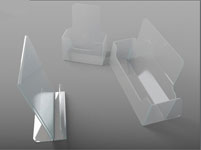

В юности я хотел вырасти в 3d-artist, пока духи леса не прошептали что у меня вообще нет художественного таланта.
Работал в геймдеве, всё более смещяя фокус на gfx-scripting.
Будучи студентом, делал shareware games для голландцев. С++, glut, DevIL.

Помогал могучей промышленности запускать новые заводы.
Выводил донских рестораторов на просторы интернета.
Работал и влюбился в станки с числовым программным управлением.

Кодил приложение доставки пиццы под (уже древние) iOS, на нём, наконец, вник в суть MVC-архитектуры.
Делал инновации для западных брендов, программно-аппаратная платформа для Swarovski.
Делал сайты для местных предпринимателей.
Есть некоторая проблема в саморекламе у погромистов. Картинки хороши сочной самодостаточностью, ведь визуальный язык куда ближе к фундаменту прошивки наших мозгов, чем семантика, смысл. Их можно слепить по ходу дела, даже банальный скриншот. С кодом так не забалуешь.
Ведь высокой публике хочется демонстрировать не итераторы, синглтоны и монады сортировку пузырьком, а законченный продукт, и не просто один из ряда жалких подражаний, "ещё один прекрасный текстовый редактор для красноглазия", а новый смысл. Хорошо быть, скажем, Фабрисом Белларом. О, гайз, бомжур ёпта я ffmpeg и QEMU придумал и написал. О_О, вы приняты!
Увы, такой уровень самопрезентации мне ещё не доступен, поэтому на синьорский суд представляю лишь жалкие обрывки кода "фигаро тут, фигаро там".
Несколько крохотных maxscript-утилит для 3dsmax.
----------------------------------------------
-- Gamedev scripts v0.1 --
-- --
-- --
-- 4.11.05 - First Release v0.1 --
-- --
-- todo: --
-- Get icons --
-- --
-- malaxit 2005 --
----------------------------------------------
macroScript bboxascollider
category:"MalaxitTools"
toolTip:"Creates collider from bbox of object"
--Icon:#("Meshtools",1)
Buttontext:"bboxAsCol"
(
on isEnabled return
(
if $!=undefined then true else false
)
on isVisible return
(
if $!=undefined then true else false
)
on execute do
(
obj = $
minA = obj.min
maxA = obj.max
len = maxA.y - minA.y
wid = maxA.x - minA.x
hei = maxA.z - minA.z
collider = box length:len width:wid height:hei
collider.center= obj.center
collider.name = obj.name + "_collider"
setuserprop collider "Smf.CollisionShape" "true"
setuserprop collider "Smf.CollisionShape.Ref" obj.name
convertToPoly collider
select collider
)
)
macroScript SMFexport
category:"MalaxitTools"
toolTip:"Exports in same dir with same name in .smf file"
--Icon:#("Meshtools",1)
Buttontext:"SmfExport"
(
on execute do
(
exfilemax = maxFilePath+maxFileName
subset = filterstring exfilemax "."
exfilemax = subset[1]
exfile = exfilemax +".smf"
exportfile exfile
)
)
macroScript SVfromObj
category:"MalaxitTools"
toolTip:"Creates Shadow Volume from object"
--Icon:#("Meshtools",1)
Buttontext:"SVfromObj"
(
on isEnabled return
(
if $!=undefined then true else false
)
on isVisible return
(
if $!=undefined then true else false
)
on execute do
(
obj = selection[1]
copy obj name:(obj.name+"_sv")
sv = getNodeByName (obj.name+"_sv")
setuserprop sv "Smf.ShadowVolume" "true"
setuserprop sv "Smf.ShadowVolume.Ref" obj.name
select sv
)
)
macroScript ColfromObj
category:"MalaxitTools"
toolTip:"Creates Collider from object"
--Icon:#("Meshtools",1)
Buttontext:"ColfromObj"
(
on isEnabled return
(
if $!=undefined then true else false
)
on isVisible return
(
if $!=undefined then true else false
)
on execute do
(
obj = selection[1]
copy obj name:(obj.name+"_col")
sv = getNodeByName (obj.name+"_col")
setuserprop sv "Smf.CollisionShape" "true"
setuserprop sv "Smf.CollisionShape.Ref" obj.name
sv.material = standard diffuse:(color 50 240 25) showinViewport:true
select sv
)
)
macroScript ElementOnbox
category:"MalaxitTools"
toolTip:"Change Element on box"
--Icon:#("Meshtools",1)
Buttontext:"ElementOnBox"
(
on execute do
(
source_obj = selection[1]
polyOp.detachFaces source_obj (polyOp.getFaceSelection source_obj) asNode:true name:"fragment__"
obj = $fragment__
minA = obj.min
maxA = obj.max
len = maxA.y - minA.y
wid = maxA.x - minA.x
hei = maxA.z - minA.z
bbox = box length:len width:wid height:hei
bbox.center= obj.center
bbox.material = standard diffuse:(color 50 240 25) showinViewport:true
polyOp.attach source_obj bbox
delete $fragment__
)
)
macroScript Hide_polygons_unwrap
enabledIn:#("max", "viz", "vizr")
category:"MalaxitTools"
toolTip:"Hide selected in unwrap polygons on mesh in viewport"
ButtonText:"Hide"
(
on execute do
(
$.unwrap_uvw.unwrap2.hideSelectedPolygons()
)
)
macroScript Unhide_polygons_unwrap
enabledIn:#("max", "viz", "vizr")
category:"MalaxitTools"
toolTip:"Unhide selected in unwrap polygons on mesh in viewport"
ButtonText:"Unhide"
(
on execute do
(
$.unwrap_uvw.unwrap2.unhideAllPolygons()
)
)
macroScript ObjInDiffFile
category:"MalaxitTools"
toolTip:"Save each object in different file"
--Icon:#("Meshtools",1)
Buttontext:"SaveObjs"
(
on execute do
(
for each in objects do
(
savenodes each (MaxFilePath+(each.name as string) + ".max")
)
)
)
macroscript noTimeSlider
category:"MalaxitTools"
Tooltip:"Toggle time slider and track bar"
Buttontext:"NoTime"
(
on execute do
(
case timeslider.isvisible() == trackbar.visible of
(
true:
(
trackbar.visible = not trackbar.visible
timeslider.setvisible (not timeslider.isvisible())
)
false:
(
trackbar.visible = false
timeslider.setvisible false
)
)
)
)
macroScript DoShadMesh
category:"MalaxitTools"
toolTip:"Writes in obj props Smf.Mesh=true"
--Icon:#("Meshtools",1)
Buttontext:"DoShadMesh"
(
on isEnabled return
(
if $!=undefined then true else false
)
on isVisible return
(
if $!=undefined then true else false
)
on execute do
(
obj = selection[1]
setuserprop sv "Smf.Mesh" "true"
)
)
macroScript VisObjExport
category:"MalaxitTools"
toolTip:"Exports selected visaries"
--Icon:#("Meshtools",1)
Buttontext:"DoScPoly!"
(
on isEnabled return
(
if $!=undefined then true else false
)
on isVisible return
(
if $!=undefined then true else false
)
on execute do
(
saveNodes $ (maxFilePath+MaxFilename + "_bsp.max")
exfile = maxFilePath+maxFileName+"_bsp"+".spoly"
exportfile exfile selectedOnly:true
)
)
macroScript bboxasbsp
category:"MalaxitTools"
toolTip:"Creates bsp from bbox of object"
--Icon:#("Meshtools",1)
Buttontext:"bboxAsBSP"
(
on isEnabled return
(
if $!=undefined then true else false
)
on isVisible return
(
if $!=undefined then true else false
)
on execute do
(
obj = $
minA = obj.min
maxA = obj.max
len = maxA.y - minA.y
wid = maxA.x - minA.x
hei = maxA.z - minA.z
bsp = box length:len width:wid height:hei
bsp.center= obj.center
bsp.name = obj.name + "_bsp"
convertToPoly bsp
select bsp
)
)
macroScript DivideBySG
category:"MalaxitTools"
toolTip:"Divides by Smooth Groups"
--Icon:#("Meshtools",1)
Buttontext:"DivBySG"
(
fn DivideBySmoothGroups =
(
--может уже делали?
if ((getappdata rootnode 1)=="SmoothGrouped") then
(
messageBox "Делали уже."
return false
)
--делаем...
Name = undefined
Obj = undefined
do
(
Obj = pickObject()
if Obj != undefined then Name = Obj.name
)
while (not queryBox ("Выбрать "+Name+"?"))
ConvertToPoly(Obj)
--проход по всем смуc-группам
for i = 1 to 32 do
(
Obj.selectBySmoothGroup i
PolyOp.DetachFaces Obj #selection delete:true asNode:false
)
setappdata rootnode 1 "SmoothGrouped"
)
DivideBySmoothGroups()
)
Кусочек кода для PC-based анализатора данных от путеизмерительной тележки, обработка и рендер диаграммы импульсов с тележки, неслучившийся проект.
#include "tcarrus.h"
#include <windows.h>
#include <GL\gl.h>
#include <GL\glu.h>
const int DUMP_SIZE = 100;
TCarrusCalculus::TCarrusCalculus( float poll_t, TPort* p )
: poll_time(poll_t)
, port(p)
, poll_dt(0.0f)
, impulses_dump( "calculus_dump.txt" )
, points_dump( "points_dump.txt" ) {}
TCarrusCalculus::~TCarrusCalculus()
{
for( list<IMPULS>::const_iterator p = impulses.begin(); p != impulses.end(); ++p )
{
IMPULS impuls = *p;
impulses_dump << (impuls & PIN1) << '\t'
<< ((impuls & PIN2) >> 1) << '\t'
<< ((impuls & PIN3) >> 2) << '\t'
<< ((impuls & PIN4) >> 3) << '\t'
<< endl;
}
impulses.clear();
impulses_dump.close();
for( list<TVector2D>::const_iterator p = points.begin(); p != points.end(); ++p )
{
TVector2D point = *p;
points_dump << fixed << point.x << '\t'
<< point.y << endl;
}
points.clear();
points_dump.close();
}
void TCarrusCalculus::update(float dt)
{
static IMPULS last_impuls = 0;
static IMPULS cur_impuls = 0;
static float timer_l = 0.0f;
static int mult_l = 1;
static float timer_r = 0.0f;
static int mult_r = 1;
static float render_timer = 0.0f;
timer_l += dt;
timer_r += dt;
poll_dt += dt;
render_timer += dt;
if( poll_dt >= poll_time )
{
impulses.push_back( port->get() );
poll_dt = 0.0f;
if( impulses.size() > DUMP_SIZE )
{
impulses_dump << (impulses.front() & PIN1) << '\t'
<< ((impulses.front() & PIN2) >> 1) << '\t'
<< ((impulses.front() & PIN3) >> 2) << '\t'
<< ((impulses.front() & PIN4) >> 3) << '\t'
<< endl;
impulses.erase( impulses.begin() );
}
cur_impuls = impulses.back();
int cur_pin1 = cur_impuls & PIN1;
int last_pin1 = last_impuls & PIN1;
int cur_pin2 = cur_impuls & PIN2;
int last_pin2 = last_impuls & PIN2;
int cur_pin3 = cur_impuls & PIN3;
int last_pin3 = last_impuls & PIN3;
int cur_pin4 = cur_impuls & PIN4;
int last_pin4 = last_impuls & PIN4;
if( timer_r >= 2.0f )
vr = 0.0f;
if( timer_l >= 2.0f )
vl = 0.0f;
if( cur_pin1 != last_pin1 )
{
if( cur_pin1 != cur_pin2 )
mult_l = 1;
if( last_pin1 == last_pin2 )
mult_l = -1;
vl = mult_l * (M_PI * diam_left) / (sensors_dimension * 2 * timer_l);
timer_l = 0.0f;
if( cur_pin1 )
last_impuls |= PIN1;
else
last_impuls &= ~PIN1;
if( cur_pin2 )
last_impuls |= PIN2;
else
last_impuls &= ~PIN2;
}
if( cur_pin3 != last_pin3 )
{
if( cur_pin3 != cur_pin4 )
mult_r = 1;
if( last_pin3 == last_pin4 )
mult_r = -1;
vr = mult_r * (M_PI * diam_right) / (sensors_dimension * 2 * timer_r);
timer_r = 0.0f;
if( cur_pin3 )
last_impuls |= PIN3;
else
last_impuls &= ~PIN3;
if( cur_pin4 )
last_impuls |= PIN4;
else
last_impuls &= ~PIN4;
}
}
angle += ((vr-vl)/axle)*2.0*dt;
left_vec.x = -sin( angle )*vl;
left_vec.y = cos(angle)*vl;
right_vec.x = -sin( angle )*vr;
right_vec.y = cos(angle)*vr;
center_vec = (left_vec + right_vec)*dt;
center_pos += center_vec;
right_pos.x = (axle/2.0)*cos( angle ) + center_pos.x;
right_pos.y = (axle/2.0)*sin( angle ) + center_pos.y ;
left_pos.x = (-axle/2.0)*cos( angle ) + center_pos.x;
left_pos.y = (-axle/2.0)*sin( angle ) + center_pos.y;
if( render_timer >= 0.5f)
{
points.push_back(center_pos);
}
}
void TImpulsDiagram::render()
{
glViewport( pos_x, pos_y, width, height );
glMatrixMode( GL_PROJECTION );
glPushMatrix();
glLoadIdentity();
gluOrtho2D( 0.0f, scale_x, 0.0f, scale_y );
glMatrixMode( GL_MODELVIEW );
glPushMatrix();
glLoadIdentity();
glLineWidth( 1.0f );
const list<IMPULS> *impulses = calculus->get_impulses();
float x = scale_x, dx = scale_x / (float)DUMP_SIZE;
for( list<IMPULS>::const_reverse_iterator p = impulses->rbegin(); p != impulses->rend(); ++p )
{
IMPULS impuls = *p;
//TODO: this is ugly, think about it
++p;
if( p != impulses->rend() )
{
IMPULS next_impuls = *p;
glBegin( GL_LINES );
glColor3f( 1.0f, 0.0f, 0.0f );
//hor
glVertex2f( x - dx, 10 * (impuls & PIN1) + 2 );
glVertex2f( x, 10 * (impuls & PIN1) + 2 );
//vert
glVertex2f( x - dx, 10 * (impuls & PIN1) + 2 );
glVertex2f( x - dx, 10 * (next_impuls & PIN1) + 2 );
glColor3f( 0.0f, 1.0f, 0.0f );
glVertex2f( x - dx, 10 * ((impuls & PIN2) >> 1) + 18 );
glVertex2f( x, 10 * ((impuls & PIN2) >> 1) + 18 );
//vert
glVertex2f( x - dx, 10 * ((impuls & PIN2) >> 1) + 18 );
glVertex2f( x - dx, 10 * ((next_impuls & PIN2) >> 1) + 18 );
glColor3f( 0.0f, 0.0f, 1.0f );
glVertex2f( x - dx, 10 * ((impuls & PIN3) >> 2) + 34 );
glVertex2f( x, 10 * ((impuls & PIN3) >> 2) + 34 );
//vert
glVertex2f( x - dx, 10 * ((impuls & PIN3) >> 2) + 34 );
glVertex2f( x - dx, 10 * ((next_impuls & PIN3) >> 2) + 34 );
glColor3f( 1.0f, 0.0f, 1.0f );
glVertex2f( x - dx, 10 * ((impuls & PIN4) >> 3) + 50 );
glVertex2f( x, 10 * ((impuls & PIN4) >> 3) + 50 );
//vert
glVertex2f( x - dx, 10 * ((impuls & PIN4) >> 3) + 50 );
glVertex2f( x - dx, 10 * ((next_impuls & PIN4) >> 3) + 50 );
glEnd();
}
else
{
glBegin( GL_LINES );
glColor3f( 1.0f, 0.0f, 0.0f );
glVertex2f( x - dx, 10 * (impuls & PIN1) + 2 );
glVertex2f( x, 10 * (impuls & PIN1) + 2 );
glColor3f( 0.0f, 1.0f, 0.0f );
glVertex2f( x - dx, 10 * ((impuls & PIN2) >> 1) + 18 );
glVertex2f( x, 10 * ((impuls & PIN2) >> 1) + 18 );
glColor3f( 0.0f, 0.0f, 1.0f );
glVertex2f( x - dx, 10 * ((impuls & PIN3) >> 2) + 34 );
glVertex2f( x, 10 * ((impuls & PIN3) >> 2) + 34 );
glColor3f( 1.0f, 0.0f, 1.0f );
glVertex2f( x - dx, 10 * ((impuls & PIN4) >> 3) + 50 );
glVertex2f( x, 10 * ((impuls & PIN4) >> 3) + 50 );
glEnd();
}
--p;
x -= dx;
}
glPopMatrix();
glMatrixMode( GL_PROJECTION );
glPopMatrix();
}
Избранные маленькие хаки на AHK под шындовс для повышения производительности и удобства работы.
;change language at capslock
$CapsLock::
if bs != 1
{
bs = 1
V++
GetCaret(X, Y,, H)
GuiX := X
GuiY := Y + H
process, exist
pid = %errorlevel%
gui, color, FFFFFF
gui, font, s8 c000000 bold, verdana
;0x02000000 = WS_CLIPCHILDREN
gui, -caption +toolwindow +AlwaysOnTop +0x08000000
CoordMode Menu, Screen
M:=mod(V,2)
if M=1
{
SetDefaultKeyboard(0x0419) ; Russian
gui, add, text, x0 y0 +hwndru, ru
gui, show, x%GuiX% y%GuiY% w15 h15 NoActivate
}
else
{
SetDefaultKeyboard(0x0409) ; english-US
gui, add, text, x0 y0 +hwnden, en
gui, show, x%GuiX% y%GuiY% w17 h15 NoActivate
}
}
return
CapsLock Up::
sleep 200
gui, Destroy
bs = 0
return
GetCaret(ByRef X:="", ByRef Y:="", ByRef W:="", ByRef H:="") {
; UIA caret
static IUIA := ComObjCreate("{ff48dba4-60ef-4201-aa87-54103eef594e}", "{30cbe57d-d9d0-452a-ab13-7ac5ac4825ee}")
; GetFocusedElement
DllCall(NumGet(NumGet(IUIA+0)+8*A_PtrSize), "ptr", IUIA, "ptr*", FocusedEl:=0)
; GetCurrentPattern. TextPatternElement2 = 10024
DllCall(NumGet(NumGet(FocusedEl+0)+16*A_PtrSize), "ptr", FocusedEl, "int", 10024, "ptr*", patternObject:=0), ObjRelease(FocusedEl)
if patternObject {
; GetCaretRange
DllCall(NumGet(NumGet(patternObject+0)+10*A_PtrSize), "ptr", patternObject, "int*", IsActive:=1, "ptr*", caretRange:=0), ObjRelease(patternObject)
; GetBoundingRectangles
DllCall(NumGet(NumGet(caretRange+0)+10*A_PtrSize), "ptr", caretRange, "ptr*", boundingRects:=0), ObjRelease(caretRange)
; VT_ARRAY = 0x20000 | VT_R8 = 5 (64-bit floating-point number)
Rect := ComObject(0x2005, boundingRects)
if (Rect.MaxIndex() = 3) {
X:=Round(Rect[0]), Y:=Round(Rect[1]), W:=Round(Rect[2]), H:=Round(Rect[3])
return
}
}
; Acc caret, need Acc.ahk
static _ := DllCall("LoadLibrary", "Str","oleacc", "Ptr")
idObject := 0xFFFFFFF8 ; OBJID_CARET
if DllCall("oleacc\AccessibleObjectFromWindow", "Ptr", WinExist("A"), "UInt", idObject&=0xFFFFFFFF, "Ptr", -VarSetCapacity(IID,16)+NumPut(idObject==0xFFFFFFF0?0x46000000000000C0:0x719B3800AA000C81,NumPut(idObject==0xFFFFFFF0?0x0000000000020400:0x11CF3C3D618736E0,IID,"Int64"),"Int64"), "Ptr*", pacc:=0)=0 {
oAcc := ComObjEnwrap(9,pacc,1)
oAcc.accLocation(ComObj(0x4003,&_x:=0), ComObj(0x4003,&_y:=0), ComObj(0x4003,&_w:=0), ComObj(0x4003,&_h:=0), 0)
X:=NumGet(_x,0,"int"), Y:=NumGet(_y,0,"int"), W:=NumGet(_w,0,"int"), H:=NumGet(_h,0,"int")
if (X | Y) != 0
return
}
; default caret
CoordMode Caret, Screen
X := A_CaretX
Y := A_CaretY
W := 4
H := 20
if (X = "" or Y = "")
{
MouseGetPos, X, Y
return
}
}
SetDefaultKeyboard(LocaleID){
Global
SPI_SETDEFAULTINPUTLANG := 0x005A
SPIF_SENDWININICHANGE := 2
Lan := DllCall("LoadKeyboardLayout", "Str", Format("{:08x}", LocaleID), "Int", 0)
VarSetCapacity(Lan%LocaleID%, 4, 0)
NumPut(LocaleID, Lan%LocaleID%)
DllCall("SystemParametersInfo", "UInt", SPI_SETDEFAULTINPUTLANG, "UInt", 0, "UPtr", &Lan%LocaleID%, "UInt", SPIF_SENDWININICHANGE)
WinGet, windows, List
Loop %windows% {
PostMessage 0x50, 0, %Lan%, , % "ahk_id " windows%A_Index%
}
}

;for create empty text file script
FileName := "NewFile" ; шаблон имени нового файла
SetTitleMatchMode, Regex
Return
; Ctrl + Shift + M: creates empty text file at
; current folder location in file explorer
#IfWinActive ahk_class (Progman|WorkerW|CabinetWClass)
^+sc32::
WinGetClass, class, A
if (class ~= "Progman|WorkerW")
FolderPath := A_Desktop
else {
for item in ComObjCreate("Shell.Application").Windows
continue
until WinExist("A") = item.hwnd || item := ""
FolderPath := item.Document.Folder.Self.Path
}
SplitPath, FolderPath,,,,, Drive
if InStr(Drive, "::") {
MsgBox, Это служебная папка, в ней нельзя создать файл
Return
}
NewFileName := FolderPath "\" FileName ".txt"
While FileExist(NewFileName) {
RegExMatch(NewFileName, "i).*\\" FileName " \((\d+)\)\.txt", number)
NewFileName := FolderPath "\" FileName " (" . (number1 = "" ? 2 : number1 + 1) . ").txt"
}
FileAppend,, % NewFileName
Sleep 1500
if (class ~= "Progman|WorkerW")
{
ControlSend SysListView321, {Text}%FileName%, A
ControlSend SysListView321, {F2}, A
}
else
{
ControlSend DirectUIHWND3, {Text}%FileName%, A
ControlSend DirectUIHWND3, {F2}, A
}
Return
#IfWinActive
Веб-пауки на питоне 2.x, уже не рабочие. B.soup тогда ещё не был популярен, да и для таких мелочей избыточен.
###################################
# #
# Полуавтоматический парсер для #
# выдёргивания описаний из ката- #
# лога суши-ресторана "Тануки". #
# #
# Точка кипения #
# malaxit 2010 #
# #
###################################
import urllib
import re
import sqlite3
import string
import sys
def parse(url, number):
page = urllib.urlopen(url)
category_number = number
page_src = unicode( page.read(), 'cp1251')
#regexp for img links
pattern_imageurl = re.compile(r'(?<=<img src="/files/shop/)good_preview_.+?\.jpg')
#regexp for name and descr
pattern_names = re.compile(r'<a href="/shop/\?action=show_good&category=\d+?&id=.+?"><b>(.+?)</b>.+?<br>(.+?)\s*</a>', re.DOTALL)
pattern_descrUrls = re.compile(r'4px;">.+?<a href="(/shop/\?action=show_good&category=\d+?&id=\d+?)"><b>', re.DOTALL)
#regexp for price
pattern_price = re.compile(r'food_bg\.jpg" align="left" style="padding-top : 4px;">(.+?\.)', re.DOTALL)
descrUrls = pattern_descrUrls.findall(page_src)
imageUrls = pattern_imageurl.findall(page_src)
names = pattern_names.findall(page_src)
prices = pattern_price.findall(page_src)
#more sku descr regex
pattern_descrDescr = re.compile(r'<div id="good_description">(.*?)</div>', re.DOTALL)
pattern_descrTable = re.compile(r'(<table cellspacing="0" cellpadding="3" border="0" width="100%" bgcolor="#fdeaa8">.+?</table>)', re.DOTALL)
pattern_descrWeight = re.compile(r'<font face="Arial" size="1">(.+?:.+?)</font>', re.DOTALL)
htmlDescr = []
for x in range(0, len(descrUrls)):
print x, ':'
descrUrls[x] = 'http://tanuki.ru/' + descrUrls[x]
descrPage = urllib.urlopen(descrUrls[x])
descrPageSrc = unicode( descrPage.read(), 'cp1251')
#descr might be null!
Descr = pattern_descrDescr.findall(descrPageSrc)[0]
Table = pattern_descrTable.findall(descrPageSrc)[0]
Weight = pattern_descrWeight.findall(descrPageSrc)[0]
#fill html page with sku descr
htmlDescr.append(('''<html>
<head>
<style type="text/css">
body { background: url(bgMain.png); background-repeat:repeat;}
h1 { margin: 7 px; font-family:Helvetica; font-style:oblique; font-size:14px;}
div {
font-family:Helvetica;
font-size:11px;
padding: 3px;
}
div img {
float: left;
margin:3px;
}
</style>
</head>
<body>
<div class="empty"></div>
<h1 align=center>''' + names[x][0] + '''</h1>
<div class="empty"></div>
<div>''' + Descr + '''</div>
<div class="empty"></div>''' + Table + '''<div class="empty"></div>
<div>''' + Weight + '''</div></body></html>'''))
print "Изображений получено, штук: ", len(imageUrls)
print "Пар (Описание, название) получено, штук: ", len(names)
print "Цен получено, штук: ", len(prices)
print "Урлов на страницы описаний товаров получено, штук: ", len(descrUrls)
print
#append urls to image names
for x in range(0, len(imageUrls)):
#two lines below for BIG images
#imageUrls[x] = string.replace(imageUrls[x], '_preview', '')
#imageUrls[x] = string.replace(imageUrls[x], '.jpg', '_1.jpg')
imageUrls[x] = 'http://tanuki.ru/files/shop/' + imageUrls[x]
#print imageUrls[x]
#end of processing
conn = sqlite3.connect("/Users/dev/tanuki/test.db")
db = conn.cursor()
#fill sku's to db
for i in range(0, len(names)):
str = """INSERT INTO merchandises (id, category_id, name, description, imageurl, price) VALUES ( NULL, ?, ?, ?, ?, ?);"""
db.execute(str, (category_number, (names[i][0] + "\n" + names[i][1]), (sqlite3.Binary(htmlDescr[i].encode('utf_8'))), imageUrls[i], prices[i],))
conn.commit()
db.close()
# -*- coding: cp1251 -*- ## # vkontakte.photoHunter () malaxit 2008 #
# скрипт, скачивающий за раз альбом или группу альбомов с vkontakte.ru #
import os, cookielib, urllib2, sys, re, threading, vkontakteAuth, random
vk_username = 'username'
vk_password = 'password'
class AsyncLoad(threading.Thread):
"only for purposes of this script"
def __init__(self, inurl):
threading.Thread.__init__(self)
self.inurl = inurl
def run(self):
Page = urllib2.urlopen(urllib2.Request(self.inurl, None, headers)).read()
PhotoPageDump = Page
PhotoLinkExpr = r'id="myphotolink"><img src="(.+?)"'
PhotoLink = re.compile(PhotoLinkExpr).findall(PhotoPageDump)[0]
#str(random.randrange(1000000)) + '_' +
Image = urllib2.urlopen(urllib2.Request(PhotoLink, None, headers)).read()
if not (os.access(os.path.basename(PhotoLink), os.F_OK)):
ImageFile = open( os.path.basename(PhotoLink), 'wb')
ImageFile.writelines(Image)
ImageFile.close()
else:
print "dup: ", os.path.basename(PhotoLink)
if len(sys.argv) == 1:
print unicode("""
vkontakte.photoHunter () malaxit 2008
Порядок пользования:
vkontakte.photoHunter.py <url страницы>
, где <url страницы> - ссылка на страницу альбома или группы альбомов В КАВЫЧКАХ("")
(вставить в командную строку из буфера обмена можно, если щёлкнуть по ней
правой кнопкой и нажать "вставить")
Все найденные фотографии скрипт складывает в папки,
названные по именам альбомов.
Папки создаются по месту расположения скрипта.""", 'cp1251')
exit()
vk = vkontakteAuth.Vkontakte(vk_username, vk_password)
headers = {'User-Agent' : 'Mozilla/5.0 (Windows; U; Windows NT 5.1; ru; rv:1.9.0.13) Gecko/2009073022 Firefox/3.0.13',
'Host' : 'vkontakte.ru',
'Content-Type' : 'application/x-www-form-urlencoded; charset=UTF-8',
'Connection' : 'close',
'Cookie' : 'remixlang=0; remixchk=5; audio_vol=100; %s' % vk.get_cookie(),
}
random.seed()
WWWopener = urllib2.build_opener(urllib2.HTTPCookieProcessor(vk.get_cookie()))
if (sys.argv[1]).find("album") != -1:
#значит, качаем альбом
Page = urllib2.urlopen(urllib2.Request(sys.argv[1], None, headers)).read()
#print Page
AlbumPageDump = Page
#узнаём имя..
AlbumNameExpr = r'».*?</a> »(.*?)</h1>'
AlbumName = re.compile(AlbumNameExpr).findall(AlbumPageDump)[0]
#если альбом по умолчанию, то называем его именем группы
if AlbumName == ' \xe0\xeb\xfc\xe1\xee\xec':
GroupNameExpr = r'<a href="/club\d+?">(.*?)</a>'
GroupName = re.compile(GroupNameExpr).findall(AlbumPageDump)[0]
AlbumName = GroupName
AlbumName = AlbumName.replace('.', ' ')
AlbumName = AlbumName.replace('"', "'")
AlbumName = AlbumName.replace(':', ' ')
AlbumName = AlbumName.replace('\\', ' ')
AlbumName = AlbumName.replace('/', ' ')
AlbumName = AlbumName.replace('*', ' ')
if not( os.access(AlbumName, os.F_OK)):
os.mkdir(AlbumName)
WorkDir = os.getcwd()
os.chdir(AlbumName)
#узнаём количество фотографий в альбоме
PhotoCountExpr = r'<div class="summary">(\d+) '
PhotoCount = re.compile(PhotoCountExpr).findall(AlbumPageDump)[0]
PhotosLinks = []
for i in range(0, int((float(PhotoCount)/20)+1.1)*20, 20):
#ищем ссылки на страницы с фото
Page = urllib2.urlopen(urllib2.Request(sys.argv[1] + "?st=" + str(i), None, headers)).read()
AlbumPageDump = Page
PhotoLinkExpr = r'<td><a href="(.*?)">'
PhotosLinks += re.compile(PhotoLinkExpr).findall(AlbumPageDump)
#качаем фото
for i in range(0, len(PhotosLinks), 4):
for j in range(0, 4):
if (i+j)<=len(PhotosLinks)-1:
PhotosLinks[i+j] = "http://vkontakte.ru" + PhotosLinks[i+j]
background = AsyncLoad(PhotosLinks[i+j])
background.start()
background.join()
os.chdir(WorkDir)
print 'dl done!'
else:
#значит, качаем группу альбомов
Page = urllib2.urlopen(urllib2.Request(sys.argv[1], None, headers)).read()
GroupPageDump = Page
GroupNameExpr = r'<a href="/club\d+?">(.*?)</a>'
GroupName = re.compile(GroupNameExpr).findall(GroupPageDump)[0]
GroupName = GroupName.replace('.', ' ')
GroupName = GroupName.replace('"', "'")
GroupName = GroupName.replace(':', ' ')
if not( os.access(GroupName, os.F_OK)):
os.mkdir(GroupName)
os.chdir(GroupName)
AlbumNameExpr = r'<div class="aname"><a.+?>(.*?)</a>'
AlbumsNames = re.compile(AlbumNameExpr).findall(GroupPageDump)
if (AlbumsNames[0] == ''):
AlbumsNames[0] = "Альбом по умолчанию"
AlbumLinkExpr = r'class="aname"><a href="(album.*?)">'
AlbumsLinks = re.compile(AlbumLinkExpr).findall(GroupPageDump)
AlbumNoteExpr = r'<div class="adesc">(.*?)</div>'
AlbumsNotes = re.compile(AlbumNoteExpr).findall(GroupPageDump)
Notes = open("AlbumsNotes.txt", 'w')
for i in range(len(AlbumsNotes)):
Notes.writelines(AlbumsNames[i])
Notes.writelines("\n")
Notes.writelines(AlbumsNotes[i])
Notes.writelines("\n\n")
Notes.close()
for i in range(len(AlbumsLinks)):
AlbumsLinks[i] = "http://vkontakte.ru/" + AlbumsLinks[i]
#качаем i-ый альбом
Page = urllib2.urlopen(urllib2.Request(AlbumsLinks[i], None, headers)).read()
AlbumPageDump = Page
#узнаём имя..
AlbumName = AlbumsNames[i]
AlbumName = AlbumName.replace('.', ' ')
AlbumName = AlbumName.replace('"', "'")
AlbumName = AlbumName.replace(':', ' ')
AlbumName = AlbumName.replace('\\', ' ')
AlbumName = AlbumName.replace('/', ' ')
AlbumName = AlbumName.replace('*', ' ')
if not( os.access(AlbumName, os.F_OK)):
os.mkdir(AlbumName)
WorkDir = os.getcwd()
os.chdir(AlbumName)
#узнаём количество фотографий в альбоме
PhotoCountExpr = r'<div class="summary">(\d+) '
PhotoCount = re.compile(PhotoCountExpr).findall(AlbumPageDump)[0]
PhotosLinks = []
for j in range(0, int((float(PhotoCount)/20)+1.1)*20, 20):
print (AlbumsLinks[i] + "?st=" + str(j))
#ищем ссылки на страницы с фото
Page = urllib2.urlopen(urllib2.Request(AlbumsLinks[i] + "?st=" + str(j), None, headers)).read()
AlbumPageDump = Page
PhotoLinkExpr = r'<td><a href="(.*?)">'
PhotosLinks += re.compile(PhotoLinkExpr).findall(AlbumPageDump)
#качаем фото
for k in range(0, len(PhotosLinks), 4):
for f in range(0, 4):
if (k+f)<=len(PhotosLinks)-1:
PhotosLinks[k+f] = "http://vkontakte.ru" + PhotosLinks[k+f]
background = AsyncLoad(PhotosLinks[k+f])
background.start()
background.join()
os.chdir(WorkDir)
print 'work done!'